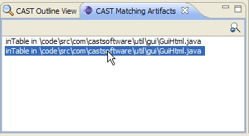

The CAST Matching Artifacts view indicates all occurrences in the current workspace of the artifact referenced in the Java Violation selected in the CAST Violation List.
This is particularly useful where you have two similar methods. For example:
The violation will only indicate that "m" is the method causing the issue and as such it is difficult to know which method is being referred to. The CAST Matching Artifacts view will thus display both methods. You can then double click the artifact to view its source code and make appropriate changes.

This view can also help where a method exists in two different files, which may be the case if you are working on two different projects and you have two identical classes. In this case the view will display both methods and the files they belong to.
The button will display the selected artifact’s corresponding source code if available in your workspace (identical to double clicking the item in the list).